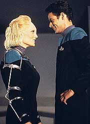
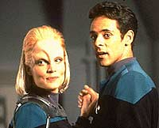
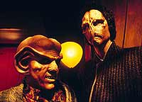
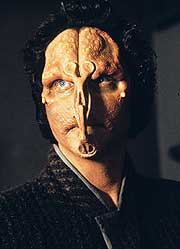
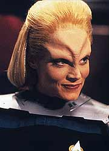

MANCHETE
DO EPISÓDIO
Episódio
não consegue explorar bem
tema pela falta de química e sutileza
Episódio
anterior | Próximo
episódio
Sinopse:
Data Estelar: 47229.1.
Bashir dita o seu diário, onde
informa dos preparativos para a chegada de uma nova cartógrafa
estelar, alferes Melora Pazlar. Ela é Elaysiana (a primeira na
Frota) e, devido à baixa gravidade do seu planeta natal, Melora
se comporta de modo similar a uma pessoa tetraplégica em um
ambiente de gravidade padrão da Federação.
Devido à incompatibilidade técnica da tecnologia
antigravitacional da Federação com a tecnologia Cardassiana,
Bashir fabrica e modifica uma cadeira de rodas e adiciona rampas
de acesso em lugares estratégicos da estação, de forma a
facilitar a vida da alferes.

Bashir
está claramente entusiasmado com a chegada da alferes e, no
caminho para a escotilha de ar, diz a Dax que Melora não aceita
(desde os seus dias na Academia) nenhum tratamento especial, como,
por exemplo, usar o teletransporte, de forma a facilitar a sua
locomoção. Os aposentos de Melora também foram modificados de
forma a permitir o desligamento do sistema de gravidade
artificial.
Bashir e Dax chegam à escotilha de ar e encontram Melora vestindo
(sobre o uniforme) uma espécie de exo-esqueleto metálico (que
facilita a sua locomoção) e uma bengala de madeira. Ela mal os
cumprimenta, agradece a cadeira, comenta sobre as modificações
feitas nela e de que Sisko designou Dax para acompanhá-la em uma
próxima missão com um Explorador no quadrante Gama. Bashir e Dax
a acompanham até os seus aposentos e ela se tranca neles, se
despedindo bruscamente.
No bar de Quark, um alienígena de nome Fallit Kot, interrompe uma
negociação do Ferengi com um também alienígena Ashrock, para
graciosamente informar que veio matá-lo. Quark não vê Kot faz
oito anos e aparentemente existem negócios inacabados entre eles.
Sisko, Dax, Bashir e Melora (que chega após o início da
conversa) discutem sobre a possibilidade da alferes ser enviada
sozinha na missão com o Explorador. Melora se comporta de forma
extremamente defensiva, chegando a extremos como dizer a Sisko
"...ninguém pode entender até sentar naquela cadeira".
Claramente ela prefere trabalhar sozinha, mas Sisko mantém a
decisão de enviar Dax e Melora juntas na missão.
Bashir faz uma visita à alferes e intrigado pergunta quem é o
homem com ela em uma foto. Ela ignora a pergunta e pede desculpas
por seu prévio comportamento. Bashir comenta sua atitude
defensiva com todos, e a convida para jantar e, depois de alguma
boa conversa, ela aceita ir com ele ao restaurante Klingon.
Quark tenta "amaciar" Kot, mas com resultados
incompletos, Kot brinda a "velhos débitos" e olha
direto para Quark.
No restaurante Klingon, uma surpreendente Melora pede que o
"Chef" troque o prato, falando em Klingon. Bashir conta
como tomou a decisão aos dez anos de que iria se tornar um médico
e sobre sua abortada carreira de tênis. Ela diz que se divertiu
muito.
Dax vai procurar Melora na manhã seguinte e não a encontra em
seus aposentos. Dax finalmente a encontra em um corredor próximo
a uma área de armazenagem, ela havia caído da cadeira e não
conseguia se levantar. Dax a leva para a enfermaria e Bashir trata
dela. Depois os dois discutem sobre a interdependência do pessoal
na estação.

Bashir
fala em uma rudimentar tecnologia surgida 30 anos atrás que
visava a adaptação de espécies de baixa gravidade a ambientes
como os da Frota Estelar (naquela época sem muito êxito). Se tal
tratamento vier a funcionar, ela poderá abandonar completamente a
cadeira de rodas, ou equivalente. Ela o convida a entrar em seus
aposentos, ela desliga a gravidade artificial e os dois começam a
flutuar. Melora diz que o homem na foto é seu irmão e os dois se
beijam flutuando em pleno ar.
Finalmente Melora e Dax partem em missão com o Explorador ao
quadrante Gama e discutem a bordo o importante tópico:
"romance na Frota Estelar".
Quark vai até o escritório de Odo pedir proteção. Odo diz que
já sabe da presença de Kot na estação e que ele e Quark
estiveram envolvidos em um roubo de um suprimento de cerveja
Romulana oito anos atrás e que Quark só não foi preso também
por que vendeu o seu cúmplice. Quark obviamente nega tudo. Quando
Quark diz que Kot pretende matá-lo, Odo faz graça.
Bashir diz a Melora que ele andou trabalhando naquela antiga
tecnologia que ele havia mencionado e aparentemente ele pode obter
resultados práticos com ela.
Odo avisa Kot que não permitirá nenhum tipo de violência contra
Quark. Kot diz que o que passou, passou. Depois, Odo diz a Quark
que não tem razão legal para prender Kot, mas ficará de olho.
Odo dá um comunicador a Quark e diz que ele o chame se houver
sinal de algum problema.
Bashir ministra o primeiro tratamento em Melora e ela já consegue
andar com apenas o auxílio da bengala naquele mesmo dia. Quando o
efeito do tratamento começa a passar ele a leva para os seus
aposentos. Bashir informa que ela não deve mais desligar a
gravidade pois irá confundir o seu sistema motor. Quando ele vai
embora, Melora percebe o quanto ela já sente saudade de voar.

Quark
chega aos seus aposentos e antes que possa chamar por ajuda é
pego em um estrangulamento por Kot. Quark oferece 199 barras de
ouro paralatinum por suas vida. Kot fica interessado.
Após completar mais uma sessão do tratamento, Melora pergunta a
Bashir a partir de que momento os efeitos serão irreversíveis.
Ele diz que dentro de mais alguns dias ela estará totalmente
adaptada a um ambiente com gravidade padrão da Federação.
Bashir sente que ela está em dúvida se deve realmente ir até o
fim com o tratamento.
De volta ao Explorador, Melora conversa com Dax sobre a
perspectiva de ganhar total independência com o tratamento, porém
se tornar uma estranha entre os de sua espécie.
Ashrock retorna a Deep Space Nine com o latinum para comprar os anéis
de Quark como combinado e se encontra na escotilha de ar com Quark
e Kot. Kot fica com o latinum, mas em um movimento não combinado
decide ficar com os anéis também. Instaura-se uma confusão e
Kot acaba arrastando Quark para uma outra escotilha de ar que vem
a ser a mesma escotilha por onde estão entrando Melora e Dax,
vindas de sua missão.
Kot faz com que as duas voltem ao Explorador, juntamente com
Quark. Quando Dax é forçada a tentar partir com a nave, Sisko
aciona um raio trator e prende a nave. Quando Sisko tenta abrir
negociações com Kot, ele atira em Melora que cai sem vida. Sisko
parte com Bashir e O'Brien no Explorador Rio Grande e logo após
libera o outro Explorador.
O Rio Grande atravessa a fenda espacial atrás do Explorador
roubado. No interior deste, Melora recupera a consciência e
desativa o sistema de gravidade artificial, conseguindo, com sua
habilidade na ausência de gravidade, pôr Kot fora de combate.
Bashir e Sisko se transportam para encontrar Quark mirando um
feiser em Kot.
De volta a DS9 no restaurante Klingon, Melora pergunta a Bashir
por que o tiro feiser não a matou. Bashir diz que provavelmente
foi um efeito colateral do seu tratamento. Melora agora está
decidida a desistir do tratamento por completo.
Bashir está um pouco desapontado. Melora diz que a sua independência
custaria a sua alienação em relação aos de sua espécie em
especial aos de sua família. Melora agradece por Bashir tê-la
ajudado a abrir a porta dos seus aposentos e permitir alguém em
sua vida. Eles continuam ali sentados conversando enquanto o
"Chef Klingon" canta uma canção de amor.
Comentários:
E para os que estavam pensando que "Invasive
Procedures" havia sido um "tombo", pensem
de novo. "Melora" é o ponto mais baixo desta
segunda temporada de Deep Space Nine e um dos mais baixos
de toda a série.
O episódio coloca em sua trama principal dois dos pontos mais
criticados (com propriedade) da história de Jornada: a
total falta de sutileza e espaço para reflexão do espectador, de
uma típica "mensagem Trekker da semana" e a
arbitrariedade e a total falta de química de mais um
"relacionamento Trekker da semana".
Tudo aqui é executado com a sutileza de um estouro de
rinocerontes: os comentários iniciais de todos sobre a brava
jornada por independência de Melora; um ENORME monólogo de
Melora (no escritório de Sisko) sobre os motivos que a fizeram
deixar sua terra natal e conhecer o Universo; Melora tomando por
ofensa e "pena" qualquer oferta de ajuda; a aproximação
de Melora e Bashir, que de tão rápida, e tão inconsistente com
o que fora estabelecido, momentos antes, sobre a personagem, chega
a ser engraçada; a forma como Bashir acaba "tirando do
bolso" um tratamento que poderá fazê-la andar em um
ambiente de gravidade normal, uma idéia que é dramaticamente
muito óbvia e que não oferece nenhum insight interessante sobre
a personagem; uma PAVOROSA discussão sobre relacionamentos entre
Melora e Dax no Explorador e a patética cena final em que (por
essencialmente razão alguma) Melora chega à "brilhante
conclusão" que ninguém é de fato totalmente independente,
PELO AMOR DE DEUS!
Ao menos (PELO MENOS ISTO) a história reconhece que o tratamento
acabaria por tornar Melora uma estranha entre os seus pares e além
disto acaba por dar uma escolha a ela. Mas a cena em que ela toma
esta decisão, no Explorador, com Dax, com direito a um
estabelecimento de paralelos com a história da "Pequena
Sereia" é VERGONHOSA.

Quanto
à trama secundária envolvendo Quark e um antigo "parceiro
de negócios", palavras como "óbvia" e "mecânica"
vêm rapidamente a cabeça. A única coisa que se pode recomendar
são as cenas com Odo, em especial uma em que ele faz um sorriso
"todo especial" quando Quark o informa que Kot planeja
matá-lo e em uma outra, onde Odo promete comprar um pedaço de
Quark se o pior vier a acontecer como Ferengi. E, como era
esperado, os acontecimentos de "Invasive
Procedures" não tiveram nenhum impacto no status de
Quark em DS9.
Foi interessante conhecer alguns pequenos detalhes sobre o passado
de Bashir (o único personagem regular realmente enfocado no episódio),
mas a claudicante atuação de El Fadil não conseguiu vender as
cenas (românticas ou não) com Melora.
Abundam problemas de trama:
Melora deveria se sentir em casa em um ambiente com uma gravidade
em que ela pudesse andar normalmente, não em um em que ela
pudesse voar;
Bashir (um oficial da Frota Estelar) não deveria sentir nenhum
tipo de "senso de novidade" com uma experiência em
"Zero-G";
A forma risível e arbitrária de como as duas tramas (TOTALMENTE
NÃO-RELACIONADAS) do episódio se conectam ao final, só para
satisfazer alguma espécie de "quociente mínimo de falsa
encrenca";
O horroroso "deus-ex-machina" no final, que faz Melora
"à prova de feiser" como um "efeito
colateral" do tratamento;
A forma "esperta" (para não dizer o contrário) de como
Melora consegue pôr Kot a nocaute no Explorador, sem gravidade,
ao final do episódio;
E para terminar este martírio:
A direção de Kolbe é falha, para dizer o mínimo. Em particular
as três cenas a bordo do Orinoco são vergonhosas de se assistir.
As partes envolvendo falta de gravidade, tiveram uma execução
MUITO ruim.
O elenco regular esteve em sua maior parte pouco inspirado,
Farrell sofreu um bocado com o péssimo material, Auberjonois foi
o destaque apesar do mínimo tempo de tela e El Fadil parecia
estar com o botão de liga/desliga solto, pois às vezes parecia
estar focado no episódio enquanto em outras aparentava estar
totalmente alheio a este.
Ashbrook fez o que pôde com o material recebido. Um ator deveria
receber dobrado para reproduzir falas como, "ninguém pode
entender até sentar naquela cadeira" e outras similares. Seu
melhor momento, e também o melhor momento do episódio, foi a
primeira conversa de Melora com o "Chef Klingon". Os
demais atores convidados se saíram no nível do "quanto
menos falarmos, melhor".
A explicação para a utilização de uma cadeira de rodas
convencional e não utilização dos transportes por parte de
Melora, foi "OK", mas, DE NOVO, contribuiu para a falta
de classe do episódio.

Aparentemente
tivemos algum problema de edição (pelo menos) ao final do episódio,
em que os diálogos parecem acabar, e a letra da canção Klingon
também, e os personagens Melora e Bashir ficam lá olhando um
para o outro. Bashir parece um completo Zumbi nesta cena final.
PAVOROSO!
"Melora" é uma ABOMINAÇÃO que mistura duas das
maiores pragas continuadas da história de Jornada, com uma
execução capenga, inúmeras situações embaraçosas de se
assistir e mais furos de roteiro do que um queijo suíço de boa
qualidade.
Citações
Quark - "Am I missing a
choice here, Fallit?"
("Eu estou esquecendo uma escolha, Fallit?")
Melora - "There's nothing worse than half-dead
rakht."
("Não há nada pior do que rakht semi-morto.")
Trivia:
 Era intenção inicial dos criadores
da série, Rick Berman e Michael Piller, ter um personagem regular
com exatamente as mesmas características da alferes Melora, mas
considerações de ordem prática eliminaram completamente esta idéia.
Mas, apesar de tudo, resolveram fazer um episódio solo com um
personagem deste tipo.
Era intenção inicial dos criadores
da série, Rick Berman e Michael Piller, ter um personagem regular
com exatamente as mesmas características da alferes Melora, mas
considerações de ordem prática eliminaram completamente esta idéia.
Mas, apesar de tudo, resolveram fazer um episódio solo com um
personagem deste tipo.
O escritor da história deste episódio,
Evan Carlos Somers, é um paraplégico que utiliza uma cadeira de
rodas.
As cenas em que Bashir e Melora
flutuam foram feitas com auxílio de cabos, que foram removidos
posteriormente da imagem, na pós-produção.
Aqui aparece pela
primeira vez o restaurante Klingon no Promenade.
Ficha
técnica:
História de Evan Carlos Somers
Roteiro de Evan Carlos Somers e Steven Baum e Michael
Piller & James Crocker
Direção de Winrich Kolbe
Exibido em 01/11/1993
Produção: 026
Elenco:
Avery Brooks como
Benjamin Lafayette Sisko
René Auberjonois como Odo
Nana Visitor como Kira Nerys
Colm Meaney como Miles Edward O'Brien
Siddig El Fadil como Julian Subatoi Bashir
Armin Shimerman como Quark
Terry Farrell como Jadzia Dax
Cirroc Lofton como Jake Sisko
Elenco convidado:
Daphne Ashbrook como alferes Melora
Pazlar
Peter Crombie como Fallit Kot
Don Stark como Ashrock
Ron Taylor como o "Chef Klingon"